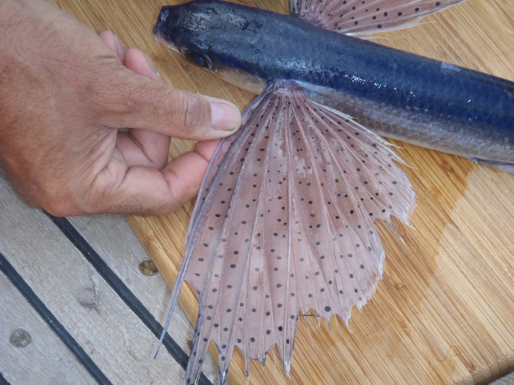
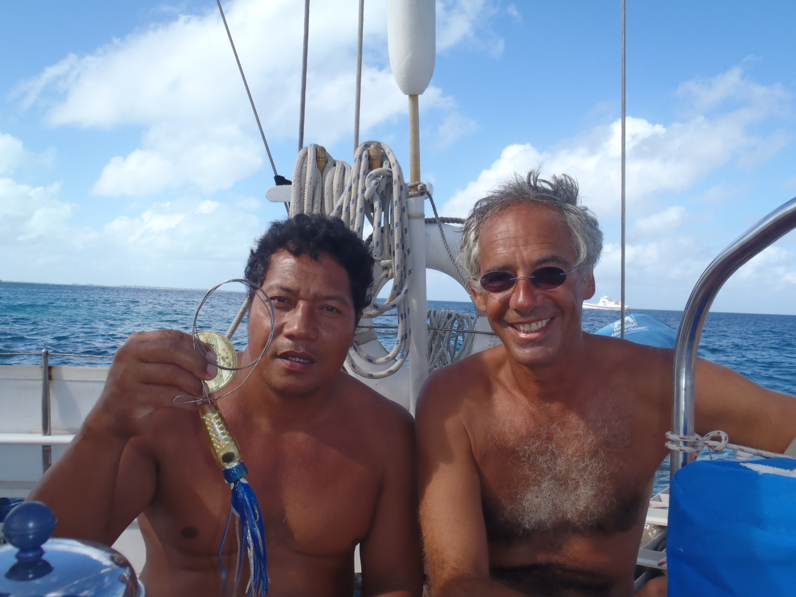
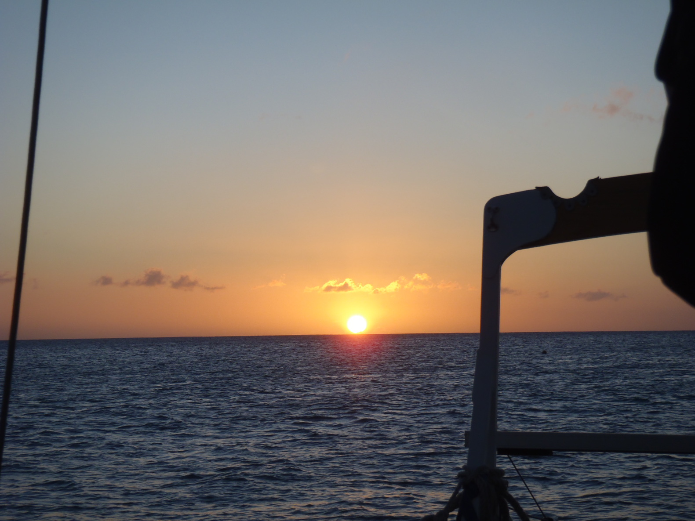
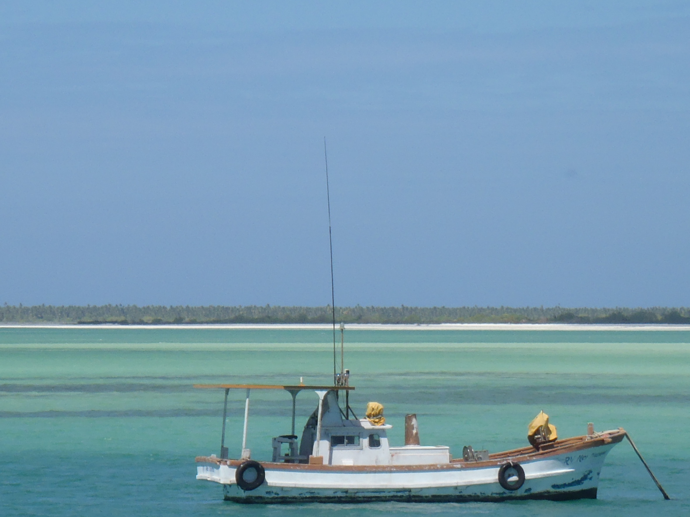
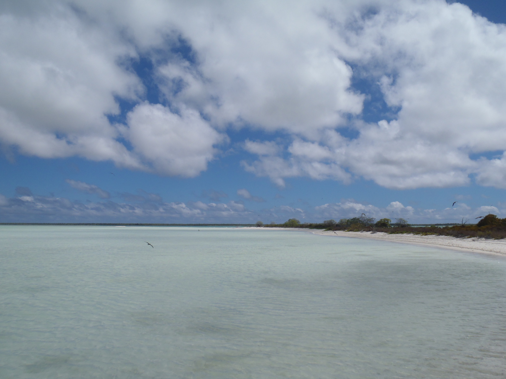
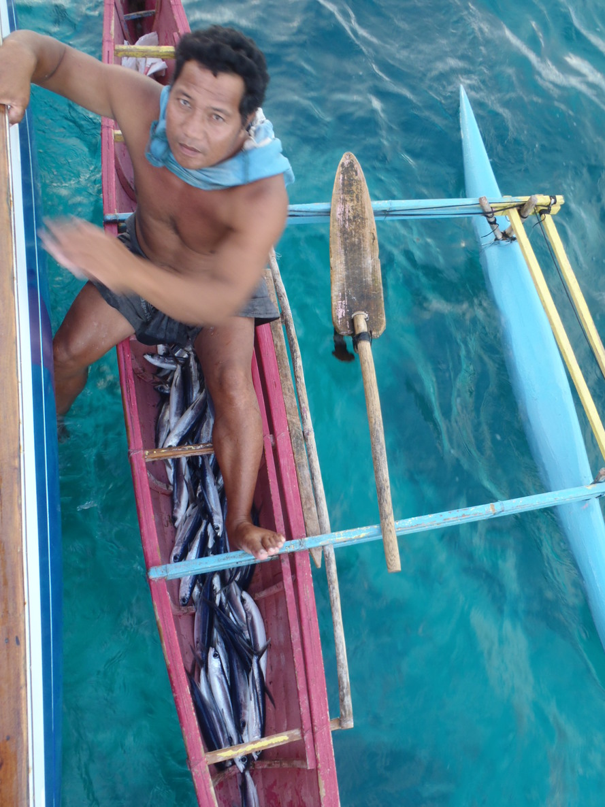
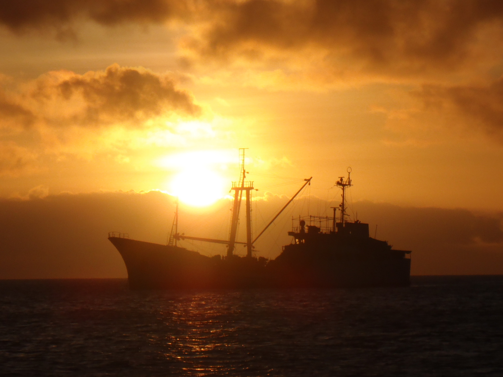

République des Kiribati, Íle de Kiritimati |
Vendredi 18 février 2011 |
|

Kiribati se prononce "Kiribass", et Kiritimati "Kirissmass". Je ne sais pas pourquoi, mais c'est comme ça.
Mais "Kirissmass" sonne comme "Christmas" à des oreilles occidentales. Quand il y a un "ti", il faut prononcer "ss".
Première surprise, les cartes ont un offset d'¼ de mille... Ça nous fait sérieusement reconsidérer cette idée d'entrer dans le lagon... La passe est étroite, et les deux cartes qu'on a à bord ne sont pas d'accord sur les sondes. Il y en a une qui dit trois pieds là où l'autre dit trois brasses. Elles sont d'accord sur d'autres points cependant, quand ça dit "very dangerous" (dans la "Bay of Wrecks" [Baie des épaves], sur la côte est de l'île), ou "constantly changing", à l'entrée de la passe à laquelle on pensait. Ce qu'on va faire, c'est qu'on va aller à terre avec l'annexe, et voir de quoi ça a l'air depuis la terre. En plongeant pour vérifier le mouillage, j'ai remarqué que l'ancre etait juste posée sur du dur (le récif) - pas de sable - et que la chaîne passait par plusieurs patates de corail. C'est ça qui tenait le bateau en place. Corine est allée à terre voir si le bureau de l'immigration était ouvert, et en passant, on a repéré des patches de sable, impeccables pour y mettre l'ancre. On fera ça à son retour. Un petit garçon qui ramassait des coquillages sur la plage lui a donné tous ceux qu'il avait déjà récupérés. Elle lui a donné un petit kangourou en peluche en échange... Corine a rapporté des nouvelles :
Ce qui est curieux, c'est qu'aucun des guides qu'on a ou qu'on a lu n'en parle. Est-ce que les auteurs sont déjà venus ici ? Parce que c'est pas dur à dire, ni à comprendre : faut pas rentrer dans le lagon. Donc, on a re-mouillé dans un patch de sable. Avec le soleil au-dessus de nos têtes, ils sont plus faciles à repérer. Un pêcheur (Ta'are) local est venu à couple, il nous a offert trois gros poissons volants. La langue qu'ils parlent ici est différente de toutes celles qu'on a entendues jusqu'alors en Polynésie. |
Dimanche 20 février 2011 |
|

Ta'are est revenu nous voir ce matin, avec deux sacs de noix de coco. On lui a offert du matériel de pêche en échange.
Il était très intéressé par les petits hameçons et les lignes toutes fines.
On est allé à terre cet après midi. Les vagues brisaient sur la plage de l'autre fois, alors on est passé par la passe. Elle est assez profonde pour l'annexe. Le petit hors-bord de 2½ chevaux a fait du bon boulot, on était (j'étais) content de l'avoir. Il y a une petite plage, où on a atterri, après la passe. L'aller était vent debout... On est tombé en carafe sur le trajet du retour, mais c'était vent arrière, on a terminé à l'aviron. Il faut qu'on pense à emporter des vêtements secs la prochaine fois..., la passe est un peu agitée, on était trempé. Le village est sympathique, des visages souriants partout. Et des petits cochons galopent dans les allées du village... |
Lundi 21 février 2011 |
|

Jour des douanes et autres formalités. À terre à nouveau, pour les douanes et l'immigration. Il nous faut un visa, c'est AUD 40 par personne. Le mec des douanes n'était pas là,
et avait emporté le tampon avec lui ; apparemment, il n'y en a qu'un sur l'île. On re-essaiera plus tard.
La plupart des formulaires qu'on a remplis étaient des feuilles blanches... Et comme partout ailleurs, je ne suis pas sûr que personne ne les lise jamais. On est donc retourné l'après-midi, et on s'est débarassé des douanes (AUD 20), de la quarantaine (on a obtenu un certificat de dératisation pour AUD 50, et pour ce prix-là, personne n'a besoin de venir à bord voir si il y a des rats...), et on a eu le tampon de l'immigration sur les passeports (AUD 40 x 2) ! On a aussi appris qu'en République des Kiribati, aujourd'hui c'est mardi..., Tarawa (la capitale) est de l'autre côté de la ligne de changement de date. Ça explique pourquoi les cloches de l'église sonnaient si fort samedi. Il faudra qu'on fasse attention pour la clearance, de ne pas se pointer pendant un week-end ! On n'arrive pas à savoir combien de gens vivent sur l'île. On a eu différentes versions : 2000 personnes, 3000 personnes, et entre 6 et 7000 personnes. Ce soir, il y a un bateau militaire français mouillé près de nous. |
Mardi 22 février 2011 |
|

On a bricolé le matin sur le bateau, du nettoyage, un peu de voilerie, on est allé à terre l'après-midi.
Il y a un Internet café à London, yes ! Mais aujourd'hui, il n'y avait pas de connexion. On re-essaiera demain.
On a marché jusqu'au terminal commercial, au nord de notre mouillage. Les enfants sortaient de l'école, ils se fendaient tous la poire en nous voyant, on doit avoir l'air rigolo, ça avait vraiment l'air d'être drôle. Corine a fait un film sous-marin. C'est dommage qu'on se sache pas préparer les oursins, il y en a des centaines sous le bateau... |
Jeudi 24 février 2011 |

Bird Tour au Motu Tabu, avec un guide (du ministère de l'environnement).
Ils nous y ont emmenés sur une de ces pirogues à balancier, avec un moteur hors-bord.
Splendide !
On progresse dans notre connaissance du I'Kiribati. Il n'existe pas de 'L', de 'D', ni de 'S' dans l'alphabet. Le 'L' est remplacé par un 'R', le 'D' par un 'T', et comme on l'a déjà vu, le 'S' par 'Ti'. Ce qui fait que London - le nom du village - s'écrit Ronton. Celle qui nous a organisé la visite sur le motu s'appelait Rasta, écrit Ratita. |
Dimanche 27 février 2011 |
|


Notre dernier jour à Kiritimati. On va ce matin à la douane et à l'immigration, pour avoir la clearance.
On atterrit sur la plage de la première fois, c'est bien plus court. On est arrivé à se faufiler entre les rouleaux.
Mais ce matin, le bureau est fermé (ici, c'est lundi). On nous a dit aussi qu'on pouvait faire des courses à
JMB, un entrepôt près de Banana, un village à environ 20 kilomètres de là où nous sommes.
On va essayer ça. Ça n'a pas marché non plus, les bus qui se sont arrêtés ne vont pas jusqu'à Banana... Ok, on re-essaiera cet après-midi. On est de retour vers 13:30, le bureau des douanes est ouvert ! On a obtenu la clearance, et on a également fait tamponner nos passeports par l'immigration. C'est fait ! On est bon. Et on a choppé un bus pour pour aller à JMB. C'est des petits bus, de 15 places. N'empêche qu'à un moment, on était 23 personnes dans le bus ! Et je suis sûr qu'il était loin d'être plein. Rigolo. On a trouvé de la bière à JMB (de la "XXXX", du Queensland, Australia). Ça devrait aller jusqu'à notre prochaine escale, Hawaii. Le magasin est en effet un grand entrepôt - comme prévu, on y fait ses courses directement dans les containers, tels qu'ils sont descendus du cargo. Ce soir, Ta'are est venu nous offrir deux derniers poissons volants. |